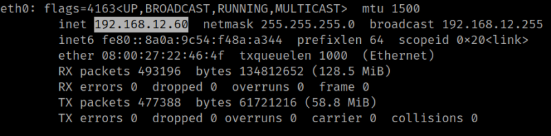

Movie
▸ Movie
▸ 2. Finding Services and Ports
▸ 4.3 Decompress zip with "bkcrack"
▸ 4.4 Connect via SSH with "id_rsa" (First flag)
▸ 5.2 Getting root (Second flag)
Difficulty: Intermediate.
Flag: 2 flags.
Learning:
• Reconnaissance
Scan Network
Find services
• Enumerate
Gobuster
• Exploitation
FFMpeg
Descompress zip with “bkcrack”
Connect via SSH with the file “id_rsa”
• Privilege Escalation
See sudoers
/bin/bash -p
• Download (Mirror): https://downloads.hackmyvm.eu/movie.zip
Install the machine on VirtualBox:
1. Download the file and extract it.
2. On Virtualbox choose File->Import Appliance.
3. Select the file “ova”.
4. Accept to import.

Watch your Machine IP.
$ ifconfigOutput:

Diagram